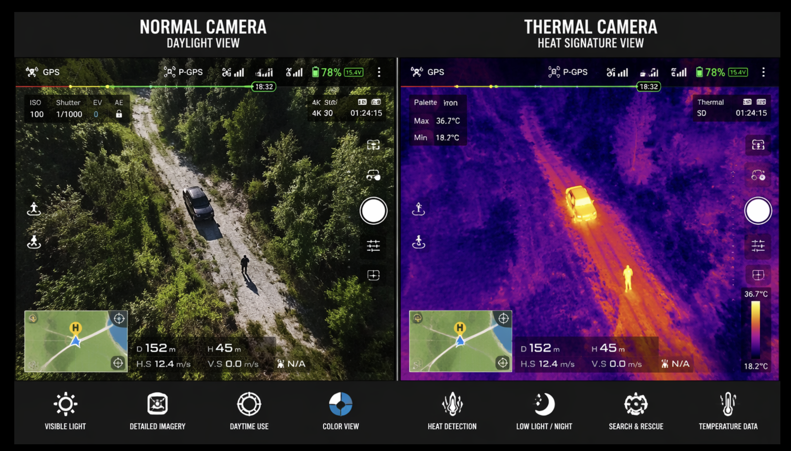
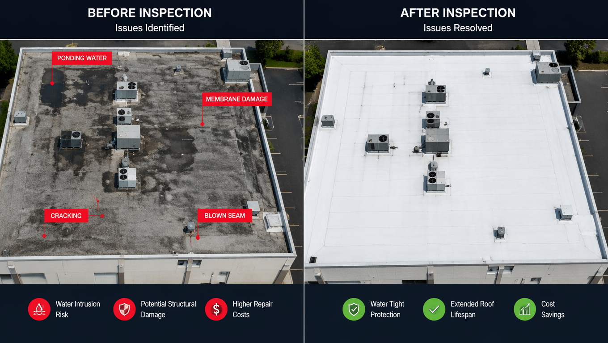

Thermal Drone Inspection Guide (2026): Why Enterprise DJI Thermal Drones Are Changing Commercial Inspections

Thermal drone inspections have become one of the fastest-growing applications in the commercial drone industry. Instead of relying solely on traditional visual inspections, businesses now use infrared imaging technology to identify temperature differences across buildings, industrial facilities, solar installations, electrical systems and other critical infrastructure. For roofing contractors, facility managers, engineers, insurance professionals and construction companies, thermal imaging provides another layer of information that can help identify areas requiring further investigation while reducing time spent working at height. This guide explains how thermal drone inspections work, where they are commonly used, and how DJI's Enterprise thermal drones have become important tools for professional inspection workflows.
What Is a Thermal Drone Inspection?
A thermal drone inspection uses an unmanned aircraft equipped with an infrared camera to capture temperature information from above. Unlike standard cameras that record visible light, thermal sensors measure infrared energy emitted by surfaces. The resulting thermal images display temperature differences across roofs, walls, machinery, solar panels and other assets. These temperature variations can help trained inspectors locate areas that deserve closer examination.
- Roof insulation deficiencies
- Possible moisture intrusion
- Electrical hot spots
- HVAC performance issues
- Solar panel abnormalities
- Industrial equipment monitoring

How Thermal Imaging Works
Every object emits infrared radiation based on its temperature. Thermal cameras detect this invisible energy and convert it into colour-coded images called thermograms. Warmer areas generally appear brighter while cooler areas appear darker, allowing inspectors to visualize temperature differences that may not be visible during a standard visual inspection. Thermal imaging is a diagnostic tool rather than a final answer. Environmental conditions, weather, surface materials and sunlight can all influence thermal readings. Professional interpretation and follow-up inspections remain essential when evaluating potential issues.
Commercial Applications
Thermal drone technology is now used across many industries where large areas must be inspected efficiently and safely.
- Commercial roofing
- Construction projects
- Solar energy facilities
- Industrial maintenance
- Utilities
- Infrastructure inspections
- Agricultural monitoring
Thermal Drone Roof Inspections
Roof inspections are one of the most recognized commercial applications for thermal drone technology. Traditional roof inspections often require workers to physically access rooftops, which can be time-consuming and introduce safety risks. Thermal drones allow inspectors to quickly capture visual and infrared data from above. Temperature differences across roofing materials may help identify areas that require additional attention, including possible moisture-related issues, insulation problems, damaged sections, or areas where further testing is recommended.

Thermal Drones in Construction
Construction companies are increasingly using thermal drones to monitor projects, document progress and evaluate building performance. During construction inspections, thermal imaging can help teams identify temperature differences in building envelopes, check completed work, monitor equipment and create detailed documentation without requiring access to difficult areas. Drone-based thermal inspections can improve efficiency by allowing large construction sites to be surveyed quickly while creating visual records for project managers, engineers and clients.
- Building envelope assessments
- Construction progress documentation
- Concrete curing monitoring
- Equipment inspections
- Site documentation
Solar Panel Inspections Using Thermal Drones
Solar farms and commercial solar installations require regular monitoring to maintain performance. Thermal imaging drones can help identify unusual temperature patterns across solar panels that may indicate potential issues requiring further evaluation. By scanning large solar arrays from the air, inspection teams can collect data faster than traditional manual methods while reducing the need for technicians to walk across large installations. Common solar inspection findings include:
- Hot spots on photovoltaic panels
- Damaged or underperforming modules
- Connection issues
- Uneven panel performance
- Maintenance priorities
Agriculture and Thermal Drone Applications
Thermal drone technology is also expanding into agriculture. Infrared sensors can help farmers and agricultural professionals analyze crop conditions, irrigation performance and areas experiencing environmental stress. Thermal data can provide additional information when combined with standard aerial photography, allowing operators to build a more complete picture of field conditions. Applications include:
- Crop stress monitoring
- Irrigation analysis
- Livestock monitoring
- Water management
- Large-scale field assessments
Three DJI Enterprise Thermal Drones for Professional Inspections
DJI has developed several enterprise drones designed specifically for professional inspection, public safety and industrial applications. These platforms combine high-resolution cameras, thermal sensors and advanced flight capabilities. The following DJI thermal drones are commonly considered by commercial operators looking for professional inspection solutions.
DJI Matrice 4T Thermal Drone

The DJI Matrice 4T is designed for professional inspection teams requiring portability, intelligent flight features and thermal imaging capability. It is suitable for applications including infrastructure inspection, electrical inspection, emergency response and commercial asset monitoring.
Check DJI Matrice 4T Pricing at B&HDJI Mavic 3 Thermal

The DJI Mavic 3 Thermal provides inspection professionals with a compact enterprise platform that is easier to transport while still offering thermal imaging functionality. Its smaller design makes it useful for contractors, inspectors and organizations needing a flexible thermal drone solution.
Check DJI Mavic 3 Thermal Advanced Pricing at B&HDJI Matrice 30T Enterprise Drone

The DJI Matrice 30T is a powerful enterprise drone designed for advanced inspection workflows. With thermal imaging, zoom capabilities and rugged construction, it is used by organizations requiring reliable aerial data collection. Applications include power line inspections, industrial facilities, search and rescue operations and infrastructure monitoring.
Check DJI Matrice 30T Enterprise Pricing at B&HWhy Thermal Drones Are Changing Commercial Inspections
The adoption of thermal drone technology represents a major shift in how companies approach inspections. Instead of relying only on manual observations, inspection teams can now combine high-resolution photography, infrared data and automated flight capabilities to create more detailed reports. For industries such as roofing, construction, solar energy and infrastructure maintenance, this means faster data collection, improved documentation and safer inspection processes. Thermal drones do not replace qualified inspectors. Instead, they provide additional information that helps professionals make better decisions about where further investigation may be required.
Limitations of Thermal Drone Inspections
Although thermal drones are powerful inspection tools, thermal imaging must be interpreted correctly. A temperature difference does not automatically mean a failure or defect exists. Factors that can affect thermal readings include:
- Weather conditions
- Sun exposure
- Surface materials
- Wind conditions
- Camera settings
- Operator experience
Professional operators combine thermal imagery with visual inspection, technical knowledge and industry-specific procedures to produce accurate assessments.
Thermal Drone Inspection Regulations and Training
Commercial drone operators must follow local aviation regulations when performing paid inspection work. Requirements may include pilot certification, airspace authorization, operational planning and appropriate safety procedures. In Canada, commercial drone operations are regulated by Transport Canada, while operators in the United States must follow Federal Aviation Administration requirements. Before offering thermal inspection services, pilots should understand both drone regulations and thermal imaging best practices.
Frequently Asked Questions About Thermal Drone Inspections
Are thermal drones worth it for roof inspections?
For professional roof inspectors and contractors, thermal drones can provide valuable additional information by identifying temperature variations that may require further investigation. They are especially useful for large commercial roofs and difficult-to-access structures.
Can thermal drones detect roof leaks?
Thermal drones can help identify temperature patterns associated with possible moisture issues, but thermal imaging alone does not confirm a leak. Additional inspection methods may be required.
What industries use thermal drones?
Thermal drones are used in roofing, construction, solar energy, utilities, agriculture, industrial maintenance, infrastructure inspection and public safety applications.
Which DJI drone has thermal imaging?
DJI offers several enterprise drones equipped with thermal cameras, including the DJI Matrice 4T, DJI Mavic 3 Thermal and DJI Matrice 30T.
References and Further Reading
- DJI Enterprise thermal drone technology information
- Transport Canada Remotely Piloted Aircraft Systems regulations
- Federal Aviation Administration commercial drone regulations
- Thermal imaging inspection best practices from industry organizations